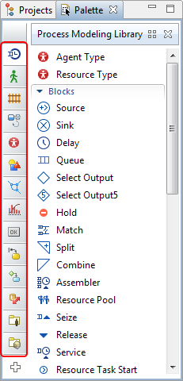
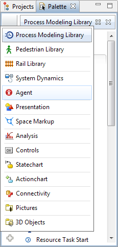

Para agregar un elemento a un diagrama de tipo de agente o experimento arrastre el elemento desde la vista Paleta hasta el lugar del diagrama, donde desea colocar este elemento.
Algunos elementos (marcados en la Paleta con iconos) también admiten el modo de dibujo, la forma alternativa de agregar estos elementos al diagrama además de arrastrar y soltar común (consulte la sección Agregar elementos de paleta al diagrama para obtener más información). La vista Paleta consta de una serie de paletas predeterminadas y también puede mostrar paletas de bibliotecas AnyLogic de terceros conectadas por el usuario.
Para mostrar una paleta determinada sitúe el mouse sobre la barra de navegación vertical acoplada al lado izquierdo de la Paleta, haga clic en el icono de la paleta requerida.
Espere a que aparezca la ventana emergente con los nombres de la paleta:
